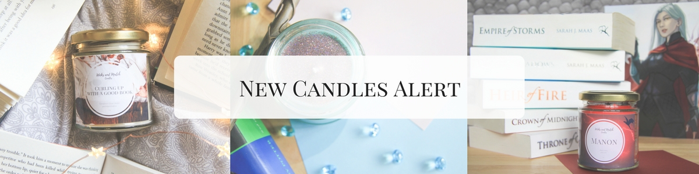
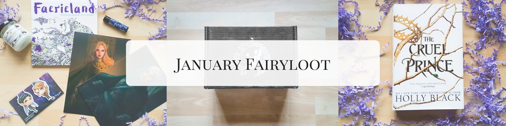
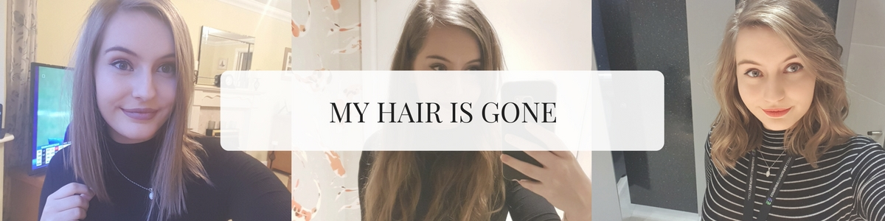

New Candle Alert
13th April 2018
HI ALL. It's been a while since I released some new candles ( and wrote a new blog post for that matter! ), so I'm super excited to announce to you the 4 new candles added to my permanent collection! They are Manon, Amortentia, So Fetch and Curling up with a Good Book. Below I'll show you some pictures of the candles and include their etsy descriptions to tell you a bit more about them.
January FairyLoot
31st January 2018
So, like everyone else I've had serious January blues. Christmas is over, it's cold, the wait until payday felt like a lifetime, etc etc. But one thing I can always count on looking forward to is my monthly book box subscription FairyLoot. I've subscribed to this for a whole year now and I'm still obsessed. Some boxes have been pretty weak but regardless I still always want more, because it's far too exciting receiving a box each month filled with surprise goodies!
My Hair is Gone
27th January 2018
IT HAPPENED. I DID IT. I CUT MY HAIR. And my oh my what a rollercoaster it has been, and still is to be honest. I decided to lob off a respectable 11 inches off my hair and for the life of me I can't get used to it. It's such a big change for me and to be honest I still don't know if I like it haha. I'm not reaallly sure what to do with it, and despite so much being taken off, I now feel like I have more hair???? It also actually takes LONGER to style and get ready in the morning. I did not sign up for this. BUT ALAS, life goes on. Anyway he's a little insight into the day I got it cut! Here's my hair before ...
2018 Blog Overhaul
7th January 2018
2017. My oh my what a year, and didn't it fly by! I feel like I've blinked and suddenly it's a whole new year? 2017 was actually a good year for me. I graduated from my degree with a first, I got myself a job on a graduate scheme were I'm actually happy, I started renting my first proper house, I passed my driving test (on the second try lol who needs to pass first time anyway), got my first car, met my lovely boyfriend and even started my own candle business on etsy! WHEWWW come on then 2018, can you top that? ...